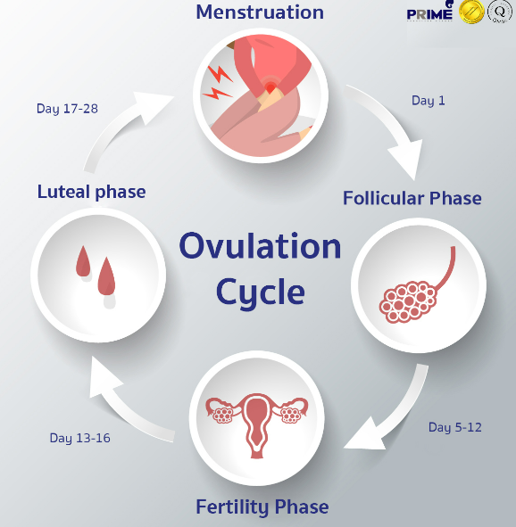

december 2001
- sun
- mon
- tue
- wed
- thu
- fri
- sat
- 1
- 2
- 3
- 4
- 5
- 6
- 7
- 8
- 9
- 10
- 11
- 12
- 13
- 14
- 15
- 16
- 17
- 18
- 19
- 20
- 21
- 22
- 23
- 24
- 25
- 26
- 27
- 28
- 29
- 30

My cycle
previous cycle length
27 days
previous period length
5 days
cycle length variation
27-56 days
Menstruation is the monthly shedding of the lining of your uterus. Menstruation is also known by the terms menses, menstrual period, menstrual cycle or period. Menstrual blood — which is partly blood and partly tissue from the inside of your uterus — flows from your uterus through your cervix and out of your body through your vagina.
Menstruation is driven by hormones. Hormones are chemical messengers in your body. Your pituitary gland (in your brain) and your ovaries (part of your reproductive system) make and release certain hormones at certain times during your menstrual cycle.
These hormones cause the lining of your uterus to thicken. This happens so that if a pregnancy would occur, an egg can implant into your uterine lining. Hormones also cause your ovaries to release an egg (ovulation). The egg moves down your fallopian tubes, where it waits for sperm. If a sperm doesn’t fertilize that egg, pregnancy doesn’t occur. The lining of your uterus breaks down and sheds. This is your period.
How long is a normal menstrual cycle?
The average length of a menstrual cycle is 28 days. However, a cycle can range in length from 21 days to about 35 days and still be normal.
DO YOU KNOW ABOUT OVULATION ?
Ovulation is the term for when a mature egg is released from the ovary. It’s part of the menstrual cycle and plays a major role in pregnancy.
The process of ovulation begins when your hypothalamus (a part of your brain) releases gonadotropin-releasing hormone (GnRH). GnRH causes your pituitary gland (a gland in your brain) to secrete follicle-stimulating hormone (FSH) and luteinizing hormone (LH).
Between days six and 14 of your menstrual cycle, FSH causes follicles (small sacs of fluid in your ovaries that contain a developing egg) in one ovary to begin to mature. During days 10 to 14 of the cycle, only one of the developing follicles forms a fully mature egg. Around day 14 in the menstrual cycle, a sudden surge in LH causes the ovary to release this egg. This is ovulation. After ovulation, the hormone progesterone rises which helps prepare your uterus for pregnancy.
When does ovulation occur?
In an average 28-day menstrual cycle, ovulation occurs about 14 days before the beginning of your next menstrual period. The exact timing varies — your cycle length may be longer or shorter. You may find it helpful to track your menstrual cycle using an app on your phone or a calendar. This can help you determine when ovulation is most likely to occur. Most people will have a period 14 to 16 days after ovulation, regardless of the length of their overall cycle.
How many hours does ovulation last?
An egg only survives 12 to 24 hours after ovulation. If sperm doesn’t fertilize the egg, your body reabsorbs it. Unlike your egg, sperm can survive for several days in your body.
What are the symptoms of ovulation?
Every person is different and not everyone has signs of ovulation. In those that do, the most common symptoms are:
HOW TO REDUCE PERIODS CRAMPS?
Bad period cramps (dysmenorrhea) occur as a result of the oxygen inability to reach the uterus tissue due to muscle contraction of the uterus walls.
Menstrual cramps are most likely caused by an excess of prostaglandins—hormone-like compounds that are released from the uterine lining (the endometrium) as it prepares to be shed. Prostaglandins help the uterus contract and relax, so that the endometrium can detach and flow out of your body. They are a necessary part of the process, but in excess, they cause pain if the uterus contracts strongly, blood flow is reduced, and the supply of oxygen to the uterus muscle tissue decreases, causing pain.

How do I relieve my period cramps?
If your periods are heavy, irregular, or extremely painful, trying to find and treat the cause of your irregularities may be important for your health. Other approaches to relieving cramps, like hormonal birth control, act by preventing the building and shedding of the endometrium.
All methods of cramp relief do at least one of the following:
- Reduce inflammation
- Limit prostaglandin product
- Block pain
- Increase uterine blood flow, or
- Treat an underlying condition, like endometriosis
THINGS TO USE DURING PERIODS
What are tampons—and how are they used?
Tampons are one method of absorbing menstrual flow during your period. Tampons are designed to be inserted into the vagina with or without an applicator.
You may be surprised to learn that the FDA regulates tampons as medical devices. Tampons cleared by the FDA are meant to be used one time and then thrown away. No tampon should be used more than once.
Are reusable tampons safe?
Reusable tampons may carry additional risks of infections such as yeast, fungal, and bacterial infections.
Menstrual cup
A menstrual cup is a menstrual hygiene device which is inserted into the vagina during menstruation. Its purpose is to collect menstrual fluid (blood from the uterine lining mixed with other fluids). Menstrual cups are usually made of flexible medical grade silicone, latex, or a thermoplastic isomer. They are shaped like a bell with a stem or a ring. The stem is used for insertion and removal, and the bell-shaped cup seals against the vaginal wall just below the cervix and collects menstrual fluid. This is unlike tampons and menstrual pads, which absorb the fluid instead
What Are Pads?
Pads are rectangles of absorbent material that you stick to the inside of your underwear. Some have extra material on the sides (called "wings") that fold over the edges of your underwear to better hold the pad in place and prevent leaks. Sometimes, pads are called sanitary pads or sanitary napkins.